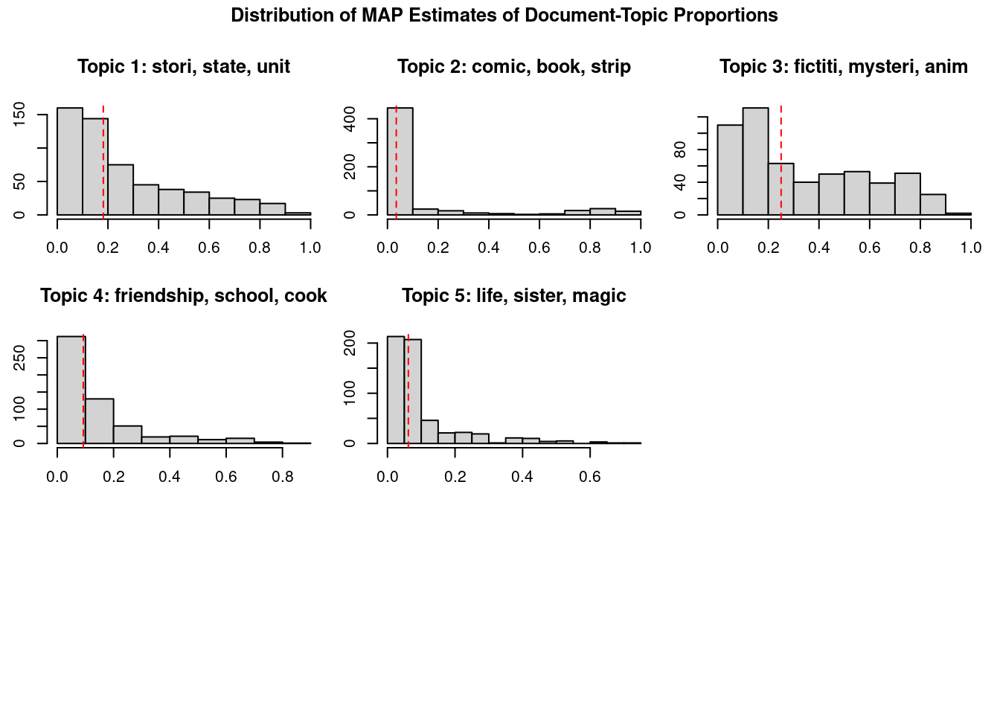
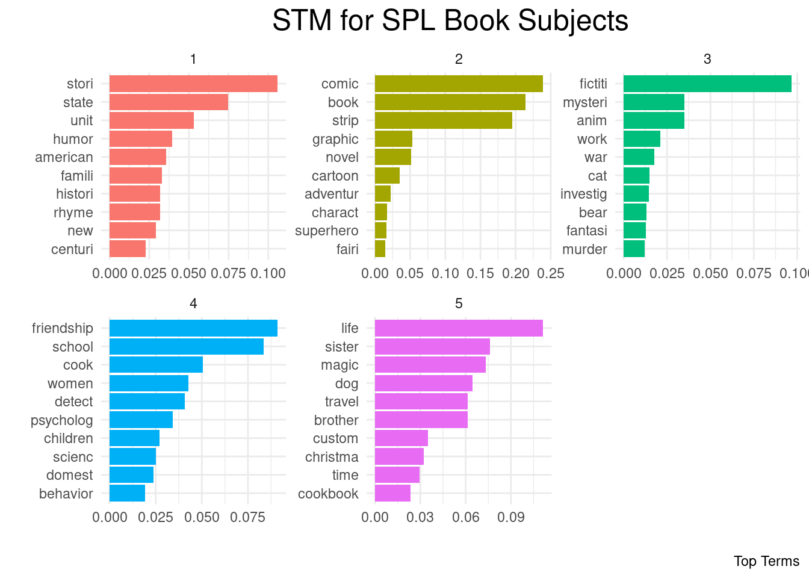
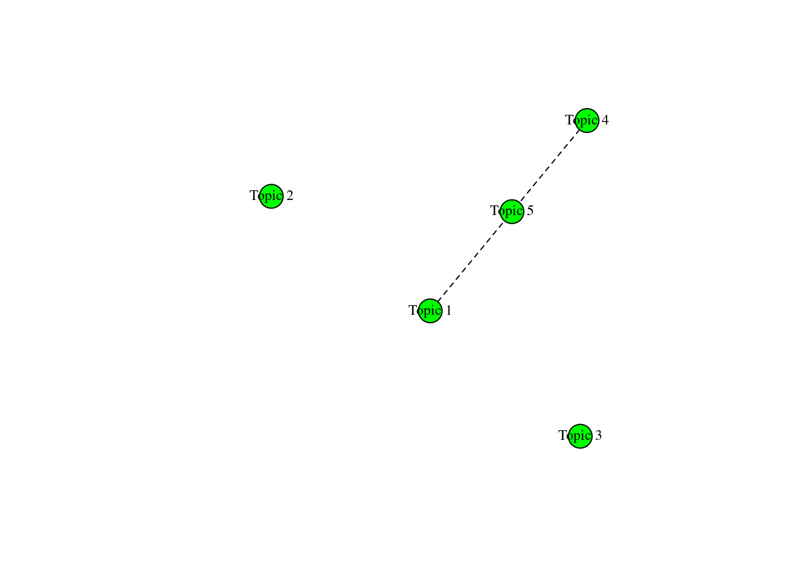

For this assignemnt, we chose to work with the Seattle Public Library Circulation Data.
First, we need to install the necessary packages. Then we’ll load the libraries.
Code
install.packages("readr")
Installing package into '/cloud/lib/x86_64-pc-linux-gnu-library/4.4'
(as 'lib' is unspecified)
Code
install.packages("caret")
Installing package into '/cloud/lib/x86_64-pc-linux-gnu-library/4.4'
(as 'lib' is unspecified)
Code
install.packages("tidyverse")
Installing package into '/cloud/lib/x86_64-pc-linux-gnu-library/4.4'
(as 'lib' is unspecified)
Code
install.packages("tidytext")
Installing package into '/cloud/lib/x86_64-pc-linux-gnu-library/4.4'
(as 'lib' is unspecified)
Code
install.packages("stm")
Installing package into '/cloud/lib/x86_64-pc-linux-gnu-library/4.4'
(as 'lib' is unspecified)
Code
install.packages("ggplot2")
Installing package into '/cloud/lib/x86_64-pc-linux-gnu-library/4.4'
(as 'lib' is unspecified)
Code
install.packages("RColorBrewer")
Installing package into '/cloud/lib/x86_64-pc-linux-gnu-library/4.4'
(as 'lib' is unspecified)
Code
install.packages("tm")
Installing package into '/cloud/lib/x86_64-pc-linux-gnu-library/4.4'
(as 'lib' is unspecified)
Code
install.packages("LDAvis")
Installing package into '/cloud/lib/x86_64-pc-linux-gnu-library/4.4'
(as 'lib' is unspecified)
Code
install.packages("igraph")
Installing package into '/cloud/lib/x86_64-pc-linux-gnu-library/4.4'
(as 'lib' is unspecified)
Code
install.packages("reshape2")
Installing package into '/cloud/lib/x86_64-pc-linux-gnu-library/4.4'
(as 'lib' is unspecified)
── Conflicts ────────────────────────────────────────── tidyverse_conflicts() ──
✖ dplyr::filter() masks stats::filter()
✖ dplyr::lag() masks stats::lag()
✖ purrr::lift() masks caret::lift()
ℹ Use the conflicted package (<http://conflicted.r-lib.org/>) to force all conflicts to become errors
Code
library(tidytext)library(stm)
stm v1.3.7 successfully loaded. See ?stm for help.
Papers, resources, and other materials at structuraltopicmodel.com
Attaching package: 'stm'
The following object is masked from 'package:lattice':
cloud
Code
library(ggplot2)library(RColorBrewer)library(tm)
Loading required package: NLP
Attaching package: 'NLP'
The following object is masked from 'package:ggplot2':
annotate
Code
library(LDAvis)library(igraph)
Attaching package: 'igraph'
The following objects are masked from 'package:lubridate':
%--%, union
The following objects are masked from 'package:dplyr':
as_data_frame, groups, union
The following objects are masked from 'package:purrr':
compose, simplify
The following object is masked from 'package:tidyr':
crossing
The following object is masked from 'package:tibble':
as_data_frame
The following objects are masked from 'package:stats':
decompose, spectrum
The following object is masked from 'package:base':
union
Code
library(reshape2)
Attaching package: 'reshape2'
The following object is masked from 'package:tidyr':
smiths
Load the data
Next, we load the data and name it “books” for ease of use.
UsageClass CheckoutType MaterialType CheckoutYear CheckoutMonth Checkouts
1 Physical Horizon BOOK 2011 4 15
2 Physical Horizon BOOK 2010 3 12
3 Physical Horizon BOOK 2011 2 12
4 Physical Horizon BOOK 2011 3 12
5 Physical Horizon BOOK 2011 6 10
6 Physical Horizon BOOK 2011 11 10
Title
1 Knit. sock. love. / Cookie A ; photography by Laura Kicey.
2 Sock innovation : knitting techniques & patterns for one-of-a-kind socks / Cookie A., author.
3 Knit. sock. love. / Cookie A ; photography by Laura Kicey.
4 Knit. sock. love. / Cookie A ; photography by Laura Kicey.
5 Knit. sock. love. / Cookie A ; photography by Laura Kicey.
6 Knit. sock. love. / Cookie A ; photography by Laura Kicey.
Creator Subjects Publisher PublicationYear
1 A., Cookie Knitting Patterns, Socks One Leg Press, 2010
2 A., Cookie Knitting Patterns, Socks Interweave Press LLC, 2009
3 A., Cookie Knitting Patterns, Socks One Leg Press, 2010
4 A., Cookie Knitting Patterns, Socks One Leg Press, 2010
5 A., Cookie Knitting Patterns, Socks One Leg Press, 2010
6 A., Cookie Knitting Patterns, Socks One Leg Press, 2010
Code
str(books) #view structure of data
'data.frame': 581697 obs. of 11 variables:
$ UsageClass : chr "Physical" "Physical" "Physical" "Physical" ...
$ CheckoutType : chr "Horizon" "Horizon" "Horizon" "Horizon" ...
$ MaterialType : chr "BOOK" "BOOK" "BOOK" "BOOK" ...
$ CheckoutYear : int 2011 2010 2011 2011 2011 2011 2012 2016 2011 2012 ...
$ CheckoutMonth : int 4 3 2 3 6 11 3 7 12 2 ...
$ Checkouts : int 15 12 12 12 10 10 14 13 13 13 ...
$ Title : chr "Knit. sock. love. / Cookie A ; photography by Laura Kicey." "Sock innovation : knitting techniques & patterns for one-of-a-kind socks / Cookie A., author." "Knit. sock. love. / Cookie A ; photography by Laura Kicey." "Knit. sock. love. / Cookie A ; photography by Laura Kicey." ...
$ Creator : chr "A., Cookie" "A., Cookie" "A., Cookie" "A., Cookie" ...
$ Subjects : chr "Knitting Patterns, Socks" "Knitting Patterns, Socks" "Knitting Patterns, Socks" "Knitting Patterns, Socks" ...
$ Publisher : chr "One Leg Press," "Interweave Press LLC," "One Leg Press," "One Leg Press," ...
$ PublicationYear: chr "2010" "2009" "2010" "2010" ...
Code
summary(books) #view summary of data
UsageClass CheckoutType MaterialType CheckoutYear
Length:581697 Length:581697 Length:581697 Min. :2010
Class :character Class :character Class :character 1st Qu.:2012
Mode :character Mode :character Mode :character Median :2014
Mean :2014
3rd Qu.:2015
Max. :2017
CheckoutMonth Checkouts Title Creator
Min. : 1.000 Min. : 10.00 Length:581697 Length:581697
1st Qu.: 4.000 1st Qu.: 11.00 Class :character Class :character
Median : 7.000 Median : 14.00 Mode :character Mode :character
Mean : 6.503 Mean : 18.36
3rd Qu.: 9.000 3rd Qu.: 20.00
Max. :12.000 Max. :810.00
Subjects Publisher PublicationYear
Length:581697 Length:581697 Length:581697
Class :character Class :character Class :character
Mode :character Mode :character Mode :character
Check for missing values
Now that we have a feel of the data and data types, we need to check for any missing values. We’ll use three different methods to verify.
Code
which(is.na(books)) #check which values are missing
integer(0)
Code
sum(is.na(books)) #sum of NA values
[1] 0
Code
anyNA(books) #returns a logical character string of whether there are any missing (NA) values
[1] FALSE
Since there are no missing values in this dataset, we’ll move forward with reducing the variable since most of them we won’t need.
Now we’ll need to reduce the size of the data by taking a random sample. Otherwise, it’s far to large for R to process.
Take random sample
Code
set.seed(123) #for reproducibility#shuffle rows in dataframebooks <- books[sample(nrow(books)),]## split big data file to 1/1000 of its size (otherwise it's too big for r to process)ind <-createDataPartition(books$Checkouts, p=1/1000, list =FALSE)books <- books[ind,]# verify splitstr(books)
'data.frame': 583 obs. of 2 variables:
$ Checkouts: int 12 50 12 11 26 11 17 19 10 17 ...
$ Subjects : chr "Crime Fiction, New York N Y Fiction, Identity Fiction, Underground areas Fiction" "Older men Fiction, Retirees Fiction, Old age Psychological aspects Fiction, Psychological fiction, Humorous fiction" "Bert Fictitious character Henson Juvenile fiction, Ernie Fictitious character Henson Juvenile fiction, Camping "| __truncated__ "Housekeeping Juvenile fiction, Week Juvenile fiction, Stories in rhyme Juvenile fiction, Humorous stories" ...
Task 2: Data Analysis and Visualization
Now we can work on our data analysis. We’ll be using Topic Modeling to analyze the Subjects variable.
Set seed
Code
set.seed(123) #for reproducability
Text Preprocessing
This process builds the text corpus, converts terms to lowercase, removes punctuation, removes stopwords, removes numbers, and stems the text (uses root words). We added some additional stop words relevant to this dataset.
Code
#Text pre-processingprocessed <-textProcessor(books$Subjects,removepunctuation =TRUE, customstopwords =c("fiction","juvenile","literature","novella","novel","etc","character","book"),#removes additional stop words#not covered by the textProcessor#functionmetadata = books)
Building corpus...
Converting to Lower Case...
Removing punctuation...
Removing stopwords...
Remove Custom Stopwords...
Removing numbers...
Stemming...
Creating Output...
Code
out <-prepDocuments(processed$documents, processed$vocab, processed$meta) #preps documents for use with stm function by removing infrequent terms
Removing 760 of 1281 terms (760 of 3898 tokens) due to frequency
Removing 9 Documents with No Words
Your corpus now has 564 documents, 521 terms and 3138 tokens.
This plots the top words for each topic and then ranks them by proportion.
Code
plot(STM)
Method 2: Plotting MAP histogram
This plot shows distribution frequencies of top terms under each topic.
Code
plot(STM, type="hist")

Method 3: Visualizing topic model using ggplot2
This visualization tidies the topics and assigns to variable “topics”, determines the most frequent terms and assigns to variable “top_terms”, and plots the top terms using a side bar graph for comparing proportions of terms under each topic.
Code
topics <-tidy(STM, matrix ="beta") #tidies the topics and assigns to variable "topics"top_terms <- topics %>%group_by(topic) %>%top_n(10, beta) %>%ungroup() %>%arrange(topic, -beta) #determines most frequent terms and assigns to variable "top_terms"top_terms %>%mutate(term =reorder(term, beta)) %>%ggplot(aes(term, beta, fill =factor(topic))) +geom_col(show.legend =FALSE) +facet_wrap(~ topic, scales ="free") +theme_minimal()+theme(plot.title =element_text(hjust =0.5, size =18))+labs(title="STM for SPL Book Subjects", caption="Top Terms")+ylab("")+xlab("")+coord_flip() #plots top terms using a side bar graph for comparing proportions of terms under each topic

Visualizing topic correlation
We can view the correlation between terms within each topic.
Code
topicor <-topicCorr(STM)plot(topicor)

Task 3: Reflections
Reflection Questions
Explain in your own words the type of data you used and the activities you completed.
Describe your experience using your chosen programming language and any issues you encountered. For example, did you have any problems uploading the dataset in R and/or using topic modeling in R?
Do you think you will use this software and process again in the future? Explain your answer including potential projects that might be appropriate.
Which data analysis technique did you choose and why did you choose that one?
Natalie’s reflection:
For AE#3 we chose to use the Seattle Circulation Data. This data contained information about book checkouts from the Seattle Public Library from 2010 - 2017. We focused on the Subject variable which contains character data types. For this assignment, I cloned the GitHub repo that David created into Posit Cloud. I changed the access from Private to All Posit Cloud Users before adding him to the workspace. I then created the Quarto (.qmd) file for us to collaborate on. I did all of the data cleaning and preprocessing, as well as adapted the R script for use with our data.
My experience with using R was pleasant, but I’m an experienced user of R. I’d never done topic modeling before, so that was new but manageable. We’d initially thought of using burst detection, but after some messing around with the script, it became clear that it wasn’t suitable for our chosen dataset (probably would work well with the Nobel Prize Winners set though). I did have some difficulties getting the toLDAvis() function to render properly, so I left that visualization method out. I also couldn’t get the findThoughts() function to match with the original. If I’d had more time to mess around with it, I’m sure I would have figured it out though. Due to the dataset’s size, working with limited RAM capacity in Posit Cloud Workspace meant that I had to reduce the size of the data by taking a random sample.
I could definitely see topic modeling as something I’d potentially use in the future. Just off the top of my head, this would be useful for analyzing interview responses in research data to see what trends appear in participant responses. I could also see it being useful for examining topic similarities within specific philosophical schools of though. For example, what topics are mentioned by post-modernists. Also, in that same vein, could be used to examine topics for prolific writers, such as Kant or Plato. But I don’t think even that is limited to only philosophers, because it could be used to look at prolific writers of fiction too (Stephen King or Neil Gaiman both come to mind immediately).
After nixing burst detection for being not suitable for our chosen data, we settled on topic modeling. The idea behind using topic modeling was to focus on the Subjects variable. In the demo script provided via the instructions titles are used. But, I felt that for our data topic modeling would work better for subjects because it can tell us which subjects are most popular. That could lend itself to determining which subjects are less popular and may need increased marketing (i.e., book displays) to help increase circulation. Subjects that already enjoy high popularity don’t need the marketing tactics as much as those that are less popular, and topic modeling proved useful for identifying frequent topics.